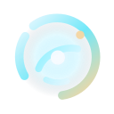
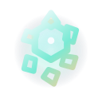
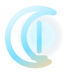
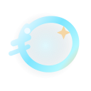
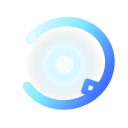
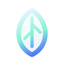
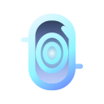
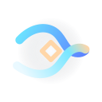

A signature orbit emblem with a broken ring and a calm central core.

Static SVG Gallery
A set of ten SVG icons shaped around orbit lines, prism facets, and quiet light. The direction is cool glass, pale highlights, and a restrained gold accent so the full collection feels ceremonial instead of generic.

A signature orbit emblem with a broken ring and a calm central core.

Crystal facets and petals layered into a bloom that feels precise and alive.

A quiet threshold built from a crescent arc, a slit, and almost no extra noise.

A comet tail crossing a loop, tuned to feel fast without getting loud.
An archive form with a halo line, made to close the first half with calm weight.

A colder orbit mark that introduces metallic light and controlled fragmentation.

A petal silhouette tightened by gemstone cuts and a cooler vertical tension.
Wave peaks translated into a ceremonial crown with a breathing rhythm.

A tall monolith and glowing lens distilled into a poised measuring totem.

Two ribbons crossing into a final knot that reads as circulation and connection.